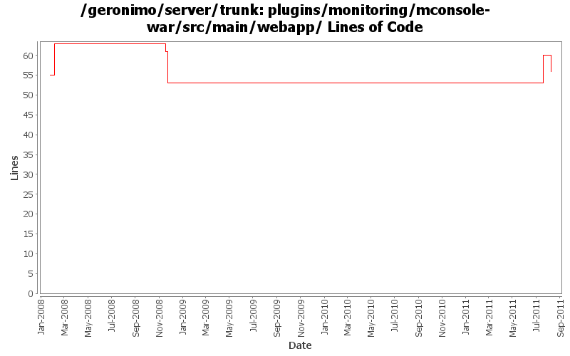

[root]/plugins/monitoring/mconsole-war/src/main/webapp
 WEB-INF
(3 files, 168 lines)
WEB-INF
(3 files, 168 lines)
 classes
(0 files, 0 lines)
classes
(0 files, 0 lines)
 META-INF
(1 files, 35 lines)
META-INF
(1 files, 35 lines)
 view
(14 files, 3822 lines)
view
(14 files, 3822 lines)

| Author | Changes | Lines of Code | Lines per Change |
|---|---|---|---|
| Totals | 9 (100.0%) | 27 (100.0%) | 3.0 |
| ecraig | 4 (44.4%) | 10 (37.0%) | 2.5 |
| genspring | 1 (11.1%) | 7 (25.9%) | 7.0 |
| djencks | 2 (22.2%) | 6 (22.2%) | 3.0 |
| rwonly | 1 (11.1%) | 3 (11.1%) | 3.0 |
| xiaming | 1 (11.1%) | 1 (3.7%) | 1.0 |
GERONIMO-6076 Graphics cannot be displayed on monitoring porlet (Thanks fang shenghao for the patch!)
3 lines of code changed in 1 file:
GERONIMO-6076 Graphics cannot be displayed on monitoring porlet. Patch from Yi Xiao.
7 lines of code changed in 1 file:
GERONIMO-5895 fix variant accessibility issues, patched by Shenghao Fang
1 lines of code changed in 1 file:
GERONIMO-4415 use jpa for data access in monitoring console
2 lines of code changed in 1 file:
GERONIMO-4415 start of code cleanup and use of jpa in console. Also add a server assembly for testing
4 lines of code changed in 1 file:
GERONIMO-3633
Monitoring client should auto redraw graphs/the page on any page that has graphs
GERONIMO-3818
Monitoring console should open individual graphs in actual new window rather than tabs in firefox
GERONIMO-3817
mconsole should display axis labels
9 lines of code changed in 1 file:
Changing Dojo 1.0.x to default /dojo
Moved context root of Dojo 0.4.3 to /dojo/0.4
Changed references in dependent plugins so they access proper versions correctly
1 lines of code changed in 1 file:
Monitoring console: Cleaned up appearance of header bar above graphs so that they match the width of the graph and are of uniform height
0 lines of code changed in 2 files: